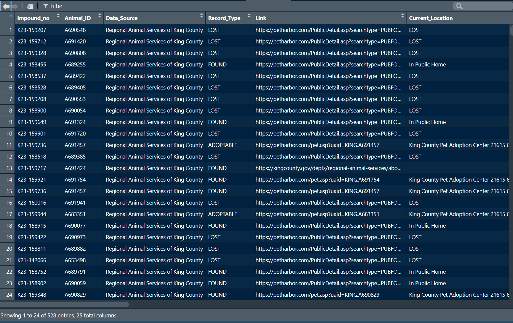

# This is how to import a CSV file from a URL
mydata1 <- read.csv("https://data.kingcounty.gov/api/views/yaai-7frk/rows.csv?accessType=DOWNLOAD")
# To import a CSV file that you have downloaded, just put the path in where the URL went above.
# If you're on Windows like me, make sure the backslahes are doubled up like this \\.
# You can also change them to single forward slashes /.
mydata1 <- read.csv("~/R Book/Datasets/Lost__found__adoptable_pets.csv")6 Importing Data
6.1 Importing a CSV or Excel file
People often store data in a spreadsheet. That makes a lot of sense since a spreadsheet has rows and columns, and that’s how most of our data in social science is going to be organized. It’s very easy to import spreadsheet data into R.
To begin, let’s be clear on the difference between Comma Separated Values (CSV) files and Microsoft’s proprietary Excel file formats (xls or xlsx). CSV files are a plain text format which separates a series of values with commas. Plain text means it cannot store formatting, macros, formulas, or other things that you might see in other file formats. You can open a CSV file in Microsoft Excel, but you cannot open an Excel file in a text editor. So, in general CSV files are probably the way to go in terms of storing data since they can be easily opened and manipulated, but Excel files are pretty great because they contain meta-data files, which can help detect instances of data tampering!
Let’s go ahead and import the data using the read.csv() function, and assign the dataframe to an object called mydata1.
Let’s start out by getting a sense of the scale of the dataframe using the dimensions dim() function. Then, let’s check very quickly that the data look ok (i.e. there arent’s any weird anomalies that jump out) by using the View() function.
dim(mydata1)[1] 540 25Using the dim() function, we can see that there are 528 rows and 25 columns in the dataframe. Each row corresponds to a unit of observation, and each column corresponds to a different variable. So, this dataframe has 528 units of observation, and 25 variables.
Cool, now let’s take a closer look at the data with the View() function.
View(mydata1)
Ok, it looks like we have a variables corresponding to whether the dog is lost, found, or adoptable (Record_type), the specific ID of the animal (Animal_ID), it’s current location, and several others. It’s always a good idea to have a look at the data to see if anything looks amiss. We’ll get more into some specifics of data cleaning a bit later, but for now, it’s worthwhile just having a look.
You can import an Excel file easily into R using the readxl package. The corresponding read_xls() and read_xlsx() functions will help you import .xls (older Excel files) and .xlsx files, respectively. The main argument is the file path.
library(readxl)
df1 <- read_xlsx("~/R Book/Datasets/Lost__found__adoptable_pets_excel.xlsx")6.2 Importing a text file
To import a text file (a file with the extension .txt), we first need to know how data are separated. Usually, this is done by tabs (think of the ‘tab’ key on your keyboard). In such cases, the read.table() function is useful where the arguments should be the URL or file path, followed by the type of separator using the sep = argument. For tabs, it should be sep = '\t'. For comma-separated data, it should be sep = ',' and for period-separated data, it should be sep = '.'. Since, this data frame is tab-separated (I know because I saved it as such), we will use the tab separator.
mydata2 <- read.table("~/R Book/Datasets/zoo.txt", sep = '\t')
dim(mydata2)[1] 44 18Using the dim() function, we can see that this dataframe has 44 units of observation and 18 variables. While we can always use the View() function to have a look at the data, let’s say that we’re in a real hurry and we just want to look at the first 10 rows of the data. Recall, that we can use head() function, and specify n = 10 to look at the first 10 rows.
head(mydata2, n = 10) V1 V2 V3 V4 V5 V6 V7 V8 V9
1 animal_name hair feathers eggs milk airborne aquatic predator toothed
2 turtle 0 0 1 0 0 1 0 0
3 chameleon 0 0 1 0 0 0 0 1
4 iguana 0 0 1 0 0 0 1 1
5 lizard 0 0 1 0 0 0 1 1
6 gecko 0 0 1 0 0 0 0 1
7 python 0 0 1 0 0 0 1 1
8 boa 0 0 1 0 0 0 1 1
9 adder 0 0 1 0 0 0 1 1
10 crocodile 0 0 1 0 0 1 1 1
V10 V11 V12 V13 V14 V15 V16 V17 V18
1 backbone breathes venomous fins legs tail domestic catsize class_type
2 1 1 0 0 4 1 1 1 3
3 1 1 0 0 4 1 1 0 3
4 1 1 0 0 4 1 1 1 3
5 1 1 0 0 4 1 0 0 3
6 1 1 0 0 4 1 1 0 3
7 1 1 1 0 0 1 0 1 3
8 1 1 0 0 0 1 0 1 3
9 1 1 1 0 0 1 0 1 3
10 1 1 0 0 4 1 0 1 3Uh oh, it looks like the first row of data is the name of the variables! That’s no good. The solution is simply to include the argument header = TRUE in the read.table() function. So let’s try that data import of a text file again with the new argument.
mydata2 <- read.table("~/R Book/Datasets/zoo.txt", sep = '\t', header = TRUE)
dim(mydata2)[1] 43 18The dim() function now shows me the dataframe has one less row than before (44 to 43). That’s good! Now, let’s use the head() function to check if the variable names are correctly excluded from our rows.
head(mydata2, n = 10) animal_name hair feathers eggs milk airborne aquatic predator toothed
1 turtle 0 0 1 0 0 1 0 0
2 chameleon 0 0 1 0 0 0 0 1
3 iguana 0 0 1 0 0 0 1 1
4 lizard 0 0 1 0 0 0 1 1
5 gecko 0 0 1 0 0 0 0 1
6 python 0 0 1 0 0 0 1 1
7 boa 0 0 1 0 0 0 1 1
8 adder 0 0 1 0 0 0 1 1
9 crocodile 0 0 1 0 0 1 1 1
10 alligator 0 0 1 0 0 1 1 1
backbone breathes venomous fins legs tail domestic catsize class_type
1 1 1 0 0 4 1 1 1 3
2 1 1 0 0 4 1 1 0 3
3 1 1 0 0 4 1 1 1 3
4 1 1 0 0 4 1 0 0 3
5 1 1 0 0 4 1 1 0 3
6 1 1 1 0 0 1 0 1 3
7 1 1 0 0 0 1 0 1 3
8 1 1 1 0 0 1 0 1 3
9 1 1 0 0 4 1 0 1 3
10 1 1 0 0 4 1 0 1 3That’s better! Always be mindful of the “header problem” wherein the headers get mistakenly included as observational units, rather than column labels.
6.3 Importing a Stata, SAS, or SPSS file
Recall from Table 3.1 that Stata, SAS, and SPSS are different proprietary programs for statistical analysis. Stata is very commonly used by economists, and others in the social sciences. SAS is commonly used by healthcare and goverment agencies. SPSS is a commonly used by psychologists and other social scientists. Sometimes you might be working with someone who uses one of these software programs, or need to import a dataset from one of these programs.
First, it’s important to know the file extension for each software program. Once you know the appropriate format, the haven package will allow us to import data from SAS, SPSS, or Stata into R. That’s pretty cool and easy! These can be found in Table 6.1
| Software | File Extension | Relevant haven package function |
|---|---|---|
| SPSS | .sav | read_sav() |
| SAS | .sas7bdat or .xpt | read_sas() or read_xpt() |
| Stata | .dta | read_dta() |
Let’s give each of these a shot with the relevant data format. Remember to install the haven package if you haven’t done that already with install.packages("haven") and then load the package using library(haven).
library(haven)
mydata3 <- read_sas("~/R Book/Datasets/naws_all.sas7bdat")
dim(mydata3)[1] 71311 357We see that the dataframe contains 71,311 observational units and 357 columns or variables. Let’s just have a quick look at the first 10 rows and first 6 columns. Notice how the head() function can easily retrieve n rows of observational units with the n = argument. However, to retrieve specific columns, we can use some subsetting we learned about earlier and retrieve the first six columns.
head(mydata3[, c(1:6)], n = 10)# A tibble: 10 × 6
SPOUSARR SPOUSE NRESPOUS HHSPOUSE SPOUSEFW SPOUSENF
<dbl> <dbl> <dbl> <dbl> <dbl> <dbl>
1 NA 0 NA 0 NA NA
2 NA 0 NA 0 NA NA
3 NA 1 3 0 NA NA
4 NA 0 NA 0 NA NA
5 NA 1 0 1 NA NA
6 NA 1 3 0 NA NA
7 NA 1 0 1 NA NA
8 NA 0 NA 0 NA NA
9 NA 0 NA 0 NA NA
10 NA 1 0 1 NA NAIt looks like this dataframe has a number of missing values, indicated by NA. This might be a problem, but it might be fine. If the data are missing by design, due to a skip pattern in a survey for instance, then we would actually expect some missing values. For example, the variable SPOUSARR indicates the year one’s spouse arrived in the US, and a missing value makes sense here if one does not have a spouse. With any dataframe, we always want to look for a codebook that explains the meaning of each variable and pattern of responses.
When a SAS data file is exported, you may see the file extension .xpt. As seen in Table 6.1, this is not a problem for the formidable haven package. Let’s import an XPT file now.
library(haven)
mydata4 <- read_xpt("~/R Book/Datasets/P_DEMO.xpt")
dim(mydata4)[1] 15560 29We can see that the data frame has 15,560 observational units and 29 columns or variables. Let’s have a look at the last 10 rows of data and first 6 columns.
tail(mydata4[, c(1:6)], n = 10)# A tibble: 10 × 6
SEQN SDDSRVYR RIDSTATR RIAGENDR RIDAGEYR RIDAGEMN
<dbl> <dbl> <dbl> <dbl> <dbl> <dbl>
1 124813 66 2 2 43 NA
2 124814 66 2 1 64 NA
3 124815 66 2 1 52 NA
4 124816 66 2 1 1 15
5 124817 66 2 2 67 NA
6 124818 66 2 1 40 NA
7 124819 66 2 1 2 NA
8 124820 66 2 2 7 NA
9 124821 66 2 1 63 NA
10 124822 66 2 1 74 NAWe can see a number of variables with values, and things seem to have imported nicely. We can’t know this for sure until we’ve done some more careful examination and cleaning of the data, but the fact that nothing looks terribly out of place at first glance is a good sign.
You will also notice that when we examined the first and last 10 rows and first six columns, R gave us a tibble of dimensions 10 * 6. A tibble is basically a well-formatted and easy to understand summary of the data in R. Tibbles print data out nicely so they’re easy to glance at.
Now you know how to import a number of common data types into R! So, why not…